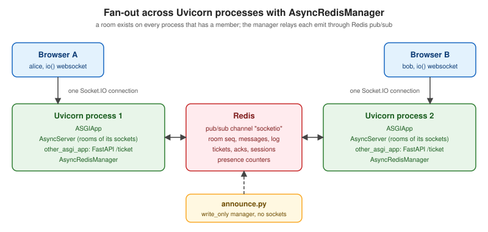

python-socketio
|
This content was generated with the assistance of AI and should be verified against the official documentation before being relied on in production. |
This page is written against python-socketio 5.17.0 (released 2026-09-14) and python-engineio 4.14.0, which speak
Socket.IO protocol v5 over Engine.IO protocol v4, and was checked on 2026-10-24. The examples use Uvicorn 0.54.0,
FastAPI 0.162.0, redis-py 8.1.0, Redis 8.8.3 and, for the browser-side half, socket.io-client 4.8.4. They need Python
3.10 or newer (the code uses the str | None syntax) and were run on Python 3.13 in Docker containers, with two server
instances behind one Redis and a Node.js 24 test client. The package metadata still says Python 3.8 or newer, but the
project dropped Python 3.8 and 3.9 from its test matrix in 5.16.0, so use a newer interpreter.
python-socketio is the Python implementation of the Socket.IO server and client by Miguel Grinberg, who also wrote python-engineio (the Engine.IO transport layer underneath). It is the Python counterpart of the Node.js server on Socket.IO (Node.js). What Socket.IO adds to a WebSocket, and the wire protocol that makes a plain WebSocket client unable to talk to it, are explained on Socket.IO Protocol and Clients; this page covers the Python side and builds the Chatterbox chat server on it.
When to choose it
Choose python-socketio when the clients are already Socket.IO clients (a JavaScript front end, a mobile SDK) or when
you want its conveniences without writing them yourself: named events with acknowledgements, rooms, namespaces,
automatic reconnection on the client, and a long-polling fallback. For raw WebSockets with a hand-made protocol in
Python, the framework pages are a better start: FastAPI WebSockets (Starlette
WebSocket endpoints) and Tornado WebSockets. The decision table across all
stacks is on Choosing a WebSocket Stack.
Of the three scenarios of this section, it fits Chatterbox well (rooms, presence, acknowledgements, a Python back end that already exists) and Huddle as a signaling channel for offers, answers and ICE candidates (see Signaling and Perfect Negotiation). It is a poor fit for Pixel Arena: a game loop that broadcasts state at 20 to 60 Hz is dominated by per-message overhead, Python’s event loop and the Socket.IO packet layer, which is the reason the arena server uses uWebSockets.js.
Compatibility
python-socketio 5.x pairs with python-engineio 4.x and interoperates with the JavaScript 3.x and 4.x client and server; the 4.x line of python-socketio is for JavaScript 1.x and 2.x, and Socket.IO 0.9 is not supported.
| JavaScript Socket.IO | Socket.IO protocol | Engine.IO protocol | python-socketio | python-engineio |
|---|---|---|---|---|
0.9.x |
1, 2 |
1, 2 |
not supported |
not supported |
1.x and 2.x |
3, 4 |
3 |
4.x |
3.x |
3.x and 4.x |
5 |
4 |
5.x |
4.x |
Source: python-socketio: Getting Started
Install the library and the pieces for the server flavour you use. The extras client and asyncio_client are only
needed for the Python clients; the servers need nothing else beyond a web server and, with several processes, a client
manager package.
# requirements.txt
python-socketio==5.17.0
python-engineio==4.14.0
uvicorn==0.54.0
websockets==17.3
fastapi==0.162.0
redis==8.1.0Uvicorn needs a WebSocket implementation (websockets here, or wsproto) to serve the WebSocket transport; without
one, clients stay on long polling or fail to upgrade. A synchronous server in threading mode needs simple-websocket
for the same reason.
Server classes and async modes
There are two servers with the same API: socketio.Server for threads and greenlets, and socketio.AsyncServer
for asyncio, where most methods are coroutines. Each runs on a web server selected with async_mode.
| Server | async_mode | Notes |
|---|---|---|
|
|
The default when no other concurrency library is installed. Runs on multi-threaded WSGI servers such as Gunicorn with threads. |
|
|
Chosen automatically when gevent is installed. Greenlets, so blocking code must be cooperative or monkey-patched. |
|
|
Chosen automatically when eventlet is installed, but the documentation does not recommend it for new projects because eventlet is in maintenance mode. |
|
|
Any ASGI server: Uvicorn, Hypercorn, Daphne, or Gunicorn with the Uvicorn worker. |
|
|
Attach to an aiohttp application or route |
The constructor options that matter for real-time work, with the defaults of 5.17.0:
| Option | Default | Meaning |
|---|---|---|
|
same origin only |
An origin or list of origins. A foreign |
|
polling and websocket |
|
|
25 s, 20 s |
Engine.IO heartbeat: the server pings every interval, and the connection is dropped when the answer takes longer than the timeout. |
|
1,000,000 bytes |
Largest accepted incoming message, for polling and WebSocket alike. |
|
|
Run each event handler of a client as a separate task. |
|
|
When |
|
only |
Extra namespaces to accept, or |
|
in-process manager |
A message-queue manager for several processes (see below). |
A first server: events, rooms, sessions, auth and namespaces
The smallest useful server shows every building block. Handlers are registered with @sio.event (the function name is
the event name) or @sio.on("name"). The return value of a handler becomes the acknowledgement the client’s callback
receives. connect(sid, environ, auth) receives the auth object the client passed to io(), and raising
ConnectionRefusedError rejects the connection and sends the error data to the client as connect_error. The session
holds per-connection data on the server and disappears on disconnect. A class-based namespace groups the handlers of
one namespace as on_* methods; the instance is a singleton shared by all clients, so per-client data must not be
stored on it.
import socketio
sio = socketio.AsyncServer(async_mode="asgi", cors_allowed_origins=["https://chat.example.test"])
app = socketio.ASGIApp(sio)
@sio.event
async def connect(sid, environ, auth):
if not auth or not auth.get("name"):
raise socketio.exceptions.ConnectionRefusedError("name required") # the client gets this as connect_error
async with sio.session(sid) as session:
session["name"] = auth["name"]
@sio.event
async def join(sid, room):
await sio.enter_room(sid, room)
return {"rooms": sio.rooms(sid)} # the return value is the acknowledgement
@sio.event
async def say(sid, data):
async with sio.session(sid) as session:
name = session["name"]
await sio.emit("said", {"name": name, "text": data["text"]}, room=data["room"], skip_sid=sid)
answer = await sio.call("whoami", to=sid, timeout=5) # server-to-client request/response
return {"delivered": True, "you_are": answer}
@sio.event
async def disconnect(sid, reason):
print("bye", sid, reason)
class AdminNamespace(socketio.AsyncNamespace):
def __init__(self, namespace):
super().__init__(namespace)
self.admins = set() # the instance is a singleton shared by every client: keep only aggregates here
async def on_connect(self, sid, environ, auth):
if not auth or auth.get("key") != "change-me":
raise socketio.exceptions.ConnectionRefusedError("forbidden")
self.admins.add(sid)
async def on_disconnect(self, sid, reason):
self.admins.discard(sid)
async def on_stats(self, sid):
return {"admins": len(self.admins)}
sio.register_namespace(AdminNamespace("/admin"))The Python client mirrors the API. It needs the asyncio_client extra (python-socketio[asyncio_client]),
and call() emits an event and waits for the acknowledgement. This script connects two clients and exercises a room
broadcast, a server-to-client request (sio.call in the say handler), the admin namespace (connected with the same
auth object) and a refused connection.
import asyncio
import socketio
async def main():
alice, bob = socketio.AsyncClient(), socketio.AsyncClient()
heard = asyncio.Queue()
@bob.on("said")
async def said(data):
await heard.put(data)
@alice.on("whoami")
async def whoami():
return "alice"
await alice.connect("http://127.0.0.1:8000", auth={"name": "alice", "key": "change-me"},
namespaces=["/", "/admin"], transports=["websocket"], wait_timeout=5)
await bob.connect("http://127.0.0.1:8000", auth={"name": "bob"}, transports=["websocket"], wait_timeout=5)
print("join ack:", await alice.call("join", "lobby"), await bob.call("join", "lobby"))
print("say ack:", await alice.call("say", {"room": "lobby", "text": "hi"}))
print("bob heard:", await asyncio.wait_for(heard.get(), 2))
print("admin stats:", await alice.call("stats", namespace="/admin"))
refused = socketio.AsyncClient()
@refused.event
async def connect_error(data):
print("connect_error:", data)
try:
await refused.connect("http://127.0.0.1:8000", transports=["websocket"], wait_timeout=5)
except socketio.exceptions.ConnectionError as exc:
print("refused:", exc)
await alice.disconnect()
await bob.disconnect()
asyncio.run(main())Running the server with uvicorn echo_server:app and the client in the same container printed:
join ack: {'rooms': ['ZSGSknN9rwbq6OzpAAAB', 'lobby']} {'rooms': ['5ssbZs7iSrRobBuMAAAE', 'lobby']}
say ack: {'delivered': True, 'you_are': 'alice'}
bob heard: {'name': 'alice', 'text': 'hi'}
admin stats: {'admins': 1}
connect_error: {'message': 'name required'}
refused: One or more namespaces failed to connect: /Points this run makes visible. Every connection is automatically in a room named after its own sid, which is how
to=sid works, so rooms(sid) lists the private room first. A catch-all handler @sio.on("*") does not receive
connect or disconnect; those are always defined explicitly. The disconnect handler receives a reason
(one of the constants in sio.reason, such as CLIENT_DISCONNECT or SERVER_DISCONNECT) since 5.12.0.
ASGI: Uvicorn and FastAPI
socketio.ASGIApp(sio, other_asgi_app=None, static_files=None, socketio_path="socket.io", on_startup=None,
on_shutdown=None) is the ASGI application. It serves /socket.io/ itself and forwards every other path to
other_asgi_app. Run it with uvicorn module:asgi. Static files are for development only.
There are two ways to combine it with FastAPI, and they behave differently in one important way.
-
Wrap FastAPI (used by the Chatterbox server below):
asgi = socketio.ASGIApp(sio, other_asgi_app=api). Requests to/socket.io/go to Socket.IO and everything else to FastAPI. The ASGI lifespan messages are handled by the Socket.IO wrapper and are not forwarded: the FastAPIlifespancontext manager never runs, so startup and shutdown work belongs inon_startupandon_shutdown. Running Uvicorn with a FastAPI app that had a lifespan, wrapped this way, printed only theon_startupandon_shutdownmessages. -
Mount in FastAPI:
api.mount("/ws", socketio.ASGIApp(sio, socketio_path="ws/socket.io")). The FastAPI lifespan runs normally. The mounted application sees the full request path, sosocketio_pathmust include the mount prefix (ws/socket.io), and the client must connect with itspathoption set to/ws/socket.io. With the defaultsocketio_paththe same mount answered 404; with the prefix included it answered 200.
For everything FastAPI-specific (dependencies, authentication, deployment) use the FastAPI section, in particular WebSockets and Deployment.
WSGI: Flask, threads and greenlets
socketio.WSGIApp(sio, wsgi_app, static_files, socketio_path) does the same job for the synchronous Server. With
Flask the application is passed as the second argument. The handlers are plain functions, and emit is synchronous.
import socketio
from flask import Flask, jsonify
sio = socketio.Server(async_mode="threading")
flask_app = Flask(__name__)
@flask_app.get("/healthz")
def healthz():
return jsonify(ok=True)
@sio.event
def echo(sid, data):
sio.emit("echoed", data, to=sid) # synchronous API: no await
return {"len": len(str(data))}
app = socketio.WSGIApp(sio, flask_app)import socketio
sio = socketio.Client()
sio.on("echoed", lambda data: print("echoed:", data))
sio.connect("http://127.0.0.1:8000")
print("ack:", sio.call("echo", {"n": 1}))
sio.sleep(1)
print("transport:", sio.transport())
sio.disconnect()This ran under gunicorn --workers 1 --threads 100 --bind 127.0.0.1:8000 wsgi_server:app with simple-websocket
installed, and the client reported transport: websocket: the Engine.IO upgrade from polling succeeded in the Gunicorn
threaded worker. One worker with many threads is the documented layout; the capacity is roughly workers times
threads, and with more than one worker you need a message queue, transports=["websocket"] and no long polling.
gevent and eventlet servers use greenlets instead of threads: the documentation says monkey patching is optional for
gevent and describes eventlet as in maintenance mode, so prefer gevent or the asyncio server for new work. Flask
itself (and what async views, gevent and Quart change) is on
Async, gevent and Quart and
Deployment, WSGI Servers and Proxies.
One interoperability detail seen while testing: the Python client sends an Origin header derived from the server
URL, so a server configured with an explicit cors_allowed_origins list refuses a Python client unless its own URL is on the
list (the server logged http://127.0.0.1:8000 is not an accepted origin). The Node.js client sends no Origin
and is accepted.
Several processes: client managers
Rooms live in the memory of the process that holds the sockets. To broadcast to a room whose members are spread over several processes or machines, give every process the same client manager. The manager publishes each emit to a message queue and every process delivers it to its own sockets.
| Manager | Install | Notes |
|---|---|---|
|
|
The |
|
|
RabbitMQ, asynchronous servers only. |
|
|
Many brokers through Kombu, synchronous servers only. |
|
|
Kafka, synchronous servers only. |
Every manager takes a channel (default socketio, the Redis channel or the RabbitMQ exchange; it must be the same
for all servers) and write_only. A write_only=True manager only publishes. It is the right choice for processes
that do not hold client connections, such as a Celery worker, a cron job or a command-line tool, which can then emit
into rooms with a plain server object; the price is that they cannot receive acknowledgement callbacks.

Facts that matter in production: since 5.14.0 the queue messages are JSON (earlier releases used pickle, and loading pickle from a channel that others can write to is unsafe); because the encoding changed, do not mix servers from before and after 5.14.0 on one queue during a rolling upgrade. From 5.15.0 the initial Redis connection is retried, and from 5.16.3 the Redis and RabbitMQ managers catch every exception in their listener and keep going. The documentation asks that the queue is kept off public interfaces and protected with authentication and encryption. Long polling with several processes additionally needs sticky sessions at the load balancer, so the Chatterbox example disables polling. The same topology in Node.js is described on Socket.IO (Node.js), and the general problem on Scaling WebSockets.
Chatterbox on python-socketio
The Chatterbox protocol is defined on
Message Design and Serialization: a JSON envelope
with v, type, id, room, ts and payload, twelve message types, a per-room seq, acknowledgements and
errors with fixed codes, idempotent ids and close codes. The server below implements hello, join, leave,
message, history, presence, typing, ack and error, one-time tickets, idempotency, resume with replay, rate
limiting and the size limit. edit, react and receipt follow the same shape (a handler, one store function, a
broadcast) and are answered with bad_request here, to keep the page readable.
Socket.IO is not a WebSocket subprotocol, so the mapping needs a few decisions. They are the main thing to carry over to any other Socket.IO back end.
| Chatterbox | On Socket.IO |
|---|---|
One envelope per frame |
One Socket.IO event named |
|
Ordinary envelopes in the same event, not Socket.IO acknowledgement callbacks, so the contract and the test client are identical on every stack. |
Subprotocol |
Not available; the |
Close codes (4401, 4408, 4426, 4429) |
Socket.IO cannot send application close codes. The server emits an event |
WebSocket ping and pong |
Engine.IO ping and pong: |
Max frame 16384 bytes |
|
Origin allow-list |
|
Ticket authentication |
|
Project files
The dependencies are the pinned list shown earlier. The Dockerfile copies three modules:
FROM python:3.13-slim
WORKDIR /srv
COPY requirements.txt .
RUN pip install --no-cache-dir -r requirements.txt
COPY store.py server.py announce.py ./
EXPOSE 8000
CMD ["uvicorn", "server:asgi", "--host", "0.0.0.0", "--port", "8000"]The Compose file runs Redis (host port 6330), two server instances (host ports 8130 and 8131) and an nginx proxy (host port 8132) in front of both. The presence grace period is shortened to one second so a demonstration finishes quickly; the protocol value is 15 seconds and is the default in the code.
services:
redis:
image: redis:8.8.3-alpine
ports:
- "127.0.0.1:6330:6379"
chatterbox-1:
build: .
environment: &env
REDIS_URL: redis://redis:6379/0
ALLOWED_ORIGINS: https://chat.example.test
PRESENCE_GRACE_SECONDS: "1" # the protocol says 15; shortened so the demo finishes quickly
ports:
- "127.0.0.1:8130:8000"
depends_on: [redis]
chatterbox-2:
build: .
environment: *env
ports:
- "127.0.0.1:8131:8000"
depends_on: [redis]
proxy:
image: nginx:1.28-alpine
volumes:
- ./nginx.conf:/etc/nginx/conf.d/default.conf:ro
ports:
- "127.0.0.1:8132:80"
depends_on: [chatterbox-1, chatterbox-2]Source: Docker Compose documentation
The state store
All state lives in Redis so that any instance can serve any client: the next seq of a room comes from INCR, the
messages and the replay log are sorted sets scored by seq, tickets are keys with a 30 second expiry read with
GETDEL (atomic, so a ticket works once), and acknowledgements are cached for 24 hours under the user and envelope id.
Only acknowledgements are cached; an error is not, so a retry after a failure is processed again.
"""Redis-backed state for the Chatterbox server: tickets, rooms, seq, history, idempotency, presence."""
import json
import os
import re
import secrets
import time
import redis.asyncio as aioredis
REDIS_URL = os.environ.get("REDIS_URL", "redis://localhost:6379/0")
r = aioredis.from_url(REDIS_URL, decode_responses=True)
CROCKFORD = "0123456789ABCDEFGHJKMNPQRSTVWXYZ"
ROOM_RE = re.compile(r"^[a-z0-9-]{1,64}$")
USER_RE = re.compile(r"^[a-z0-9]{1,32}$")
HISTORY_PAGE_BYTES = 262144
EVENT = "chatterbox" # every envelope travels as the single argument of this Socket.IO event
def ulid() -> str:
"""26-character ULID: 48-bit millisecond timestamp followed by 80 random bits."""
n = (int(time.time() * 1000) << 80) | secrets.randbits(80)
return "".join(CROCKFORD[(n >> (5 * i)) & 31] for i in range(25, -1, -1))
def server_id() -> str:
return "s_" + ulid()
def now_ms() -> int:
return int(time.time() * 1000)
def dumps(value) -> str:
return json.dumps(value, ensure_ascii=False, separators=(",", ":"))
def utf16_len(text: str) -> int:
return len(text.encode("utf-16-le")) // 2 # same unit as JavaScript String.length
class ChatError(Exception):
CODES = {"bad_request": False, "unsupported_version": False, "unauthorized": False,
"forbidden": False, "not_found": False, "conflict": False, "too_large": False,
"rate_limited": True, "internal": True, "unavailable": True}
def __init__(self, code: str, message: str):
super().__init__(message)
self.code, self.message, self.retryable = code, message, self.CODES[code]
def envelope(type_, room, payload, id_=None):
return {"v": 1, "type": type_, "id": id_ or server_id(), "room": room, "ts": now_ms(), "payload": payload}
def display_name(user_id: str) -> str:
return user_id.capitalize()
# --- tickets (one-time, 30 s) ---------------------------------------------------------------
async def issue_ticket(user_id: str) -> str:
if not USER_RE.match(user_id):
raise ChatError("bad_request", "user must match [a-z0-9]{1,32}")
ticket = "tk_" + secrets.token_urlsafe(24)
await r.set(f"ticket:{ticket}", user_id, ex=30)
return ticket
async def redeem_ticket(ticket: str):
return await r.getdel(f"ticket:{ticket}") # atomic read-and-delete: a replay finds nothing
# --- idempotency ----------------------------------------------------------------------------
async def cached_ack(user_id: str, env_id: str):
raw = await r.get(f"idem:{user_id}:{env_id}")
return json.loads(raw) if raw else None
async def remember_ack(user_id: str, env_id: str, ack_payload: dict):
await r.set(f"idem:{user_id}:{env_id}", dumps(ack_payload), ex=86400)
# --- rooms and membership -------------------------------------------------------------------
def check_room_access(room: str, user_id: str):
if not ROOM_RE.match(room):
raise ChatError("bad_request", "room must match [a-z0-9-]{1,64}")
if room.startswith("dm-"):
parts = room.split("-")
if len(parts) != 3 or parts[1] > parts[2] or user_id not in parts[1:]:
raise ChatError("forbidden", "direct-message room")
async def add_member(room: str, user_id: str) -> bool:
added = await r.sadd(f"room:{room}:members", user_id)
await r.sadd(f"user:{user_id}:rooms", room)
return bool(added)
async def remove_member(room: str, user_id: str) -> bool:
removed = await r.srem(f"room:{room}:members", user_id)
await r.srem(f"user:{user_id}:rooms", room)
return bool(removed)
async def is_member(room: str, user_id: str) -> bool:
return bool(await r.sismember(f"room:{room}:members", user_id))
async def user_rooms(user_id: str) -> list[str]:
return sorted(await r.smembers(f"user:{user_id}:rooms"))
async def members(room: str) -> list[dict]:
out = []
for uid in sorted(await r.smembers(f"room:{room}:members")):
out.append({"userId": uid, "name": display_name(uid),
"status": await r.hget("presence", uid) or "offline"})
return out
async def last_seq(room: str) -> int:
return int(await r.get(f"room:{room}:seq") or 0)
# --- messages -------------------------------------------------------------------------------
async def append_message(room, user_id, msg_id, text, reply_to=None, attachments=None):
"""Assign the next seq, store the message and return the broadcast envelope."""
if reply_to is not None and not await r.hexists(f"room:{room}:ids", reply_to):
raise ChatError("not_found", "replyTo is not a message of this room")
seq = await r.incr(f"room:{room}:seq")
if not await r.hsetnx(f"room:{room}:ids", msg_id, seq):
raise ChatError("conflict", "message id already used")
env = envelope("message", room, {
"from": {"userId": user_id, "name": display_name(user_id)}, "text": text,
"replyTo": reply_to, "attachments": attachments or [], "seq": seq, "edited": False}, id_=msg_id)
member = dumps(env)
await r.zadd(f"room:{room}:msgs", {member: seq})
await r.zadd(f"room:{room}:log", {member: seq})
return env
async def history(room, before, limit):
upper = "+inf" if before is None else f"({before}"
raws = await r.zrevrangebyscore(f"room:{room}:msgs", upper, "-inf", start=0, num=limit + 1)
page, size = [], 0
for raw in raws[:limit]:
size += len(raw.encode())
if page and size > HISTORY_PAGE_BYTES: # keep a page under 256 KiB, return fewer messages
break
page.append(json.loads(raw))
has_more = len(page) < len(raws)
page.reverse()
return {"messages": page, "hasMore": has_more, "next": page[0]["payload"]["seq"] if has_more else None}
async def log_since(room, since):
return [json.loads(x) for x in await r.zrangebyscore(f"room:{room}:log", f"({since}", "+inf")]
# --- sessions and presence --------------------------------------------------------------------
async def save_session(session_id, user_id, ttl=None):
await r.set(f"sess:{session_id}", user_id, ex=ttl or 120)
async def session_owner(session_id):
return await r.get(f"sess:{session_id}")
async def set_status(user_id, status) -> bool:
"""Returns True when the status changed (and so must be broadcast)."""
previous = await r.hget("presence", user_id)
await r.hset("presence", user_id, status)
return previous != statusSource: Redis: Sorted sets
The server
Read it from the bottom up: asgi is the application, on_envelope is the single entry point, and the handlers
return (seq, result) for the acknowledgement. Decisions worth noting:
-
async_handlers=Falsemakes the server process one client’s events strictly in arrival order, which the protocol needs: a client retries unacknowledged envelopes in their original order. With the defaultTrue, handlers of one client run concurrently and two quickly sent messages could be given theirseqin a different order. The cost is that a slow handler delays that client’s following events, so handlers must stay short. -
to=sidsends useignore_queue=True: the socket is on this process, so the message skips the Redis round trip. Room emits go through the manager and reach every instance, the sender’s other instance included. -
Rate limiting is a token bucket per connection (20 per second, capacity 40) checked before deduplication, and ten
rate_limitederrors within ten seconds close the connection with 4429. -
Presence uses a per-user connection counter in Redis. When it falls to zero a background task waits for the grace period and only then marks the user offline, so a page reload does not flash an offline notice.
"""Chatterbox protocol v1 over Socket.IO: one event name, one envelope per event."""
import logging
import os
import time
from dataclasses import dataclass, field
import socketio
from redis.exceptions import RedisError
from fastapi import FastAPI, HTTPException
import store
from store import EVENT, ChatError, envelope
log = logging.getLogger("chatterbox")
CLOSE_EVENT = "chatterbox.close" # Socket.IO has no close codes, so the code travels in this event
HEARTBEAT_MS = 20000
MAX_FRAME = 16384
GRACE = float(os.environ.get("PRESENCE_GRACE_SECONDS", "15"))
ORIGINS = os.environ.get("ALLOWED_ORIGINS", "https://chat.example.test").split(",")
mgr = socketio.AsyncRedisManager(store.REDIS_URL)
sio = socketio.AsyncServer(
async_mode="asgi",
client_manager=mgr,
cors_allowed_origins=ORIGINS,
transports=["websocket"], # required with several workers or instances
ping_interval=HEARTBEAT_MS / 1000,
ping_timeout=HEARTBEAT_MS / 1000, # silent for 2 x heartbeatMs -> disconnected
max_http_buffer_size=MAX_FRAME,
async_handlers=False, # one client's envelopes are handled strictly in arrival order
)
@dataclass
class Conn:
user_id: str | None = None
session_id: str | None = None
ready: bool = False
tokens: float = 40.0
stamp: float = field(default_factory=time.monotonic)
limited: list = field(default_factory=list)
CONNS: dict[str, Conn] = {}
# --- sending ------------------------------------------------------------------------------------
async def send(sid, env):
await sio.emit(EVENT, env, to=sid, ignore_queue=True) # sid lives on this process: skip Redis
async def send_error(sid, ref, err: ChatError, room=None):
await send(sid, envelope("error", room, {"ref": ref, "code": err.code, "message": err.message,
"retryable": err.retryable}))
async def close(sid, code, reason):
await sio.emit(CLOSE_EVENT, {"code": code, "reason": reason}, to=sid, ignore_queue=True)
await sio.disconnect(sid)
async def to_room(room, env, skip_sid=None):
await sio.emit(EVENT, env, room=room, skip_sid=skip_sid) # goes through Redis to every instance
async def presence_env(room, user_id, status):
return envelope("presence", room, {"userId": user_id, "name": store.display_name(user_id), "status": status})
async def broadcast_presence(user_id, status, skip_sid=None):
for room in await store.user_rooms(user_id):
await to_room(room, await presence_env(room, user_id, status), skip_sid)
# --- connection lifecycle -----------------------------------------------------------------------
@sio.event
async def connect(sid, environ, auth):
CONNS[sid] = Conn()
sio.start_background_task(hello_deadline, sid)
async def hello_deadline(sid):
await sio.sleep(5)
conn = CONNS.get(sid)
if conn and not conn.ready:
await send_error(sid, None, ChatError("unauthorized", "hello expected within 5 s"))
await close(sid, 4408, "hello timeout")
@sio.event
async def disconnect(sid, reason):
conn = CONNS.pop(sid, None)
if not conn or not conn.ready:
return
await store.save_session(conn.session_id, conn.user_id) # keeps the session for the 120 s resume window
if await store.r.decr(f"conns:{conn.user_id}") <= 0:
sio.start_background_task(go_offline_later, conn.user_id)
async def go_offline_later(user_id):
await sio.sleep(GRACE)
if int(await store.r.get(f"conns:{user_id}") or 0) <= 0 and await store.set_status(user_id, "offline"):
await broadcast_presence(user_id, "offline")
# --- the one event ------------------------------------------------------------------------------
@sio.on(EVENT)
async def on_envelope(sid, data):
conn = CONNS.get(sid)
if conn is None:
return
ref = data.get("id") if isinstance(data, dict) else None
room = data.get("room") if isinstance(data, dict) else None
try:
if not take_token(conn):
conn.limited = [t for t in conn.limited if time.monotonic() - t < 10] + [time.monotonic()]
if len(conn.limited) >= 10:
return await close(sid, 4429, "rate limited")
raise ChatError("rate_limited", "slow down")
validate(data)
if data["v"] != 1:
await send_error(sid, ref, ChatError("unsupported_version", "v must be 1"))
return await close(sid, 4426, "unsupported version")
kind = data["type"]
if kind == "hello":
return await do_hello(sid, conn, data)
if not conn.ready:
await send_error(sid, ref, ChatError("unauthorized", "hello first"))
return await close(sid, 4401, "hello required")
if kind in FIRE_AND_FORGET:
return await FIRE_AND_FORGET[kind](sid, conn, data)
handler = ACKED.get(kind)
if handler is None:
raise ChatError("bad_request", f"unknown type {kind!r}")
cached = await store.cached_ack(conn.user_id, data["id"])
if cached:
cached["dup"] = True
return await send(sid, envelope("ack", room, cached))
seq, result = await handler(sid, conn, data)
ack = {"ref": data["id"], "ok": True, "seq": seq, "dup": False, "result": result}
await store.remember_ack(conn.user_id, data["id"], ack)
await send(sid, envelope("ack", room, ack))
if kind == "join" and isinstance(data["payload"].get("since"), int):
for missed in await store.log_since(data["room"], data["payload"]["since"]):
await send(sid, missed) # replay follows the ack
except ChatError as err:
await send_error(sid, ref, err, room if isinstance(room, str) else None)
except RedisError:
log.warning("redis unavailable")
await send_error(sid, ref, ChatError("unavailable", "state store unavailable"), room if isinstance(room, str) else None)
except Exception:
log.exception("handler failed")
await send_error(sid, ref, ChatError("internal", "internal error"))
def take_token(conn: Conn) -> bool:
now = time.monotonic()
conn.tokens = min(40.0, conn.tokens + (now - conn.stamp) * 20)
conn.stamp = now
if conn.tokens >= 1:
conn.tokens -= 1
return True
return False
def validate(data):
if not isinstance(data, dict) or not isinstance(data.get("v"), int):
raise ChatError("bad_request", "envelope must be an object with an integer v")
if not isinstance(data.get("type"), str) or not isinstance(data.get("payload"), dict):
raise ChatError("bad_request", "type and payload are required")
if not isinstance(data.get("id"), str) or not 26 <= len(data["id"]) <= 36:
raise ChatError("bad_request", "id must be 26 to 36 characters")
if data.get("room") is not None and not isinstance(data["room"], str):
raise ChatError("bad_request", "room must be a string or null")
if len(store.dumps(data).encode()) > MAX_FRAME:
raise ChatError("too_large", "frame exceeds 16384 bytes")
# --- handlers -----------------------------------------------------------------------------------
async def do_hello(sid, conn, env):
if conn.ready:
raise ChatError("conflict", "already authenticated")
payload = env["payload"]
user_id = await store.redeem_ticket(str(payload.get("token", "")))
if not user_id:
await send_error(sid, env["id"], ChatError("unauthorized", "invalid or expired ticket"))
return await close(sid, 4401, "unauthorized")
resume = payload.get("resume") or {}
resumed = bool(resume.get("sessionId")) and await store.session_owner(resume["sessionId"]) == user_id
conn.user_id, conn.ready = user_id, True
conn.session_id = resume["sessionId"] if resumed else store.ulid()
await store.save_session(conn.session_id, user_id)
rooms = await store.user_rooms(user_id)
for room in rooms:
await sio.enter_room(sid, room)
if await store.r.incr(f"conns:{user_id}") == 1 and await store.set_status(user_id, "online"):
await broadcast_presence(user_id, "online", skip_sid=sid)
await send(sid, envelope("hello", None, {
"ref": env["id"], "userId": user_id, "name": store.display_name(user_id), "sessionId": conn.session_id,
"heartbeatMs": HEARTBEAT_MS, "maxFrameBytes": MAX_FRAME, "resumed": resumed, "rooms": rooms}))
if resumed:
for room, seen in (resume.get("rooms") or {}).items():
if room in rooms and isinstance(seen, int):
for missed in await store.log_since(room, seen):
await send(sid, missed)
def require_room(env) -> str:
room = env.get("room")
if not room:
raise ChatError("bad_request", "room is required")
return room
async def need_member(conn, room):
if not await store.is_member(room, conn.user_id):
raise ChatError("forbidden", "join the room first")
async def do_join(sid, conn, env):
room = require_room(env)
store.check_room_access(room, conn.user_id)
since = env["payload"].get("since")
if since is not None and not isinstance(since, int):
raise ChatError("bad_request", "since must be an integer or null")
newly = await store.add_member(room, conn.user_id)
await sio.enter_room(sid, room)
if newly:
status = await store.r.hget("presence", conn.user_id) or "online"
await to_room(room, await presence_env(room, conn.user_id, status), skip_sid=sid)
return None, {"members": await store.members(room), "lastSeq": await store.last_seq(room)}
async def do_leave(sid, conn, env):
room = require_room(env)
if not await store.remove_member(room, conn.user_id):
raise ChatError("not_found", "not a member")
await sio.leave_room(sid, room)
return None, {}
async def do_message(sid, conn, env):
room, p = require_room(env), env["payload"]
await need_member(conn, room)
text = p.get("text")
if not isinstance(text, str) or not 1 <= store.utf16_len(text) <= 4000:
raise ChatError("bad_request", "text must be 1 to 4000 characters")
attachments = p.get("attachments") or []
if not isinstance(attachments, list) or len(attachments) > 5 or not all(
isinstance(a, dict) and str(a.get("url", "")).startswith("https://") for a in attachments):
raise ChatError("bad_request", "at most 5 attachments with https urls")
msg = await store.append_message(room, conn.user_id, env["id"], text, p.get("replyTo"), attachments)
await to_room(room, msg)
return msg["payload"]["seq"], {}
async def do_presence(sid, conn, env):
status = env["payload"].get("status")
if status not in ("online", "away"):
raise ChatError("bad_request", "status must be online or away")
await store.save_session(conn.session_id, conn.user_id) # the heartbeat keeps the session alive
if await store.set_status(conn.user_id, status):
await broadcast_presence(conn.user_id, status, skip_sid=sid)
return None, {}
async def do_history(sid, conn, env):
room, p = require_room(env), env["payload"]
await need_member(conn, room)
limit = p.get("limit", 50)
if not isinstance(limit, int) or not 1 <= limit <= 100:
raise ChatError("bad_request", "limit must be 1 to 100")
return None, await store.history(room, p.get("before"), limit)
async def do_typing(sid, conn, env):
room = env.get("room")
if room and await store.is_member(room, conn.user_id) and env["payload"].get("state") in ("start", "stop"):
await to_room(room, envelope("typing", room, {"userId": conn.user_id, "state": env["payload"]["state"]}),
skip_sid=sid)
ACKED = {"join": do_join, "leave": do_leave, "message": do_message, "presence": do_presence, "history": do_history}
FIRE_AND_FORGET = {"typing": do_typing}
# --- HTTP part (FastAPI) and the combined ASGI app ----------------------------------------------
api = FastAPI(title="Chatterbox")
@api.post("/ticket")
async def ticket(user: str):
try:
return {"ticket": await store.issue_ticket(user)}
except ChatError as err:
raise HTTPException(400, err.message)
except RedisError:
raise HTTPException(503, "state store unavailable")
@api.get("/healthz")
async def healthz():
return {"ok": True}
asgi = socketio.ASGIApp(sio, other_asgi_app=api)Posting from outside the server
A deployment job, a moderation tool or a Celery task can post into a room without holding a socket. This script uses a
write-only manager and the same store function, so the message gets a real seq and is part of history. It ran with
docker compose run --rm chatterbox-1 python announce.py with the room and the text as the two arguments, and a client connected to
the other instance received it with seq 35.
"""Post a system message into a room from a process that holds no connections."""
import asyncio
import sys
import socketio
import store
async def main(room: str, text: str):
# write_only=True: publish to Redis only, never subscribe (and so never receive callbacks)
external = socketio.AsyncServer(client_manager=socketio.AsyncRedisManager(store.REDIS_URL, write_only=True))
msg = await store.append_message(room, "system", store.ulid(), text)
await external.emit(store.EVENT, msg, room=room)
print("announced seq", msg["payload"]["seq"])
asyncio.run(main(sys.argv[1], sys.argv[2]))nginx in front of both instances
upstream chatterbox {
server chatterbox-1:8000;
server chatterbox-2:8000;
}
map $http_upgrade $connection_upgrade {
default upgrade;
"" close;
}
server {
listen 80;
location /socket.io/ {
proxy_pass http://chatterbox;
proxy_http_version 1.1;
proxy_set_header Upgrade $http_upgrade;
proxy_set_header Connection $connection_upgrade;
proxy_set_header Host $host;
proxy_set_header X-Forwarded-For $proxy_add_x_forwarded_for;
proxy_set_header X-Forwarded-Proto $scheme;
proxy_read_timeout 75s; # must exceed the 20 s Engine.IO ping interval
}
location / {
proxy_pass http://chatterbox;
proxy_set_header Host $host;
}
}Because the transport is WebSocket only, the two instances need no sticky sessions: nginx can balance each new
connection freely, and the ticket (stored in Redis) can be redeemed on whichever instance receives the hello. The
whole test below passed unchanged against the proxy, with the two clients landing on different instances.
Testing with a Node.js client
Python has no in-process test client for Socket.IO. The practical options are an AsyncClient against a real server
(started on a free port, as in the echo example) or, as here, an independent client in another language, which also
proves the protocol mapping and the JavaScript compatibility. This Node.js 24 script uses socket.io-client 4.8.4
(npm install socket.io-client@4.8.4 in a directory whose package.json sets the module type to module) and checks tickets, cross-instance
broadcast, acknowledgements, duplicates, errors, ordering, history and resume. Alice is connected to instance 1 and
Bob to instance 2.
// Test client: Node 24 + socket.io-client 4.8.4 against two Chatterbox instances.
import { io } from "socket.io-client";
import { randomBytes } from "node:crypto";
const A = process.env.A ?? "http://127.0.0.1:8130";
const B = process.env.B ?? "http://127.0.0.1:8131";
const ORIGIN = "https://chat.example.test";
const CROCKFORD = "0123456789ABCDEFGHJKMNPQRSTVWXYZ";
const ulid = () => {
let n = (BigInt(Date.now()) << 80n) | BigInt("0x" + randomBytes(10).toString("hex"));
let out = "";
for (let i = 0; i < 26; i++) { out = CROCKFORD[Number(n & 31n)] + out; n >>= 5n; }
return out;
};
const sleep = (ms) => new Promise((r) => setTimeout(r, ms));
let failures = 0;
const check = (ok, label) => { console.log(`${ok ? "PASS" : "FAIL"} ${label}`); if (!ok) failures++; };
class Client {
constructor(base, user) { this.base = base; this.user = user; this.inbox = []; this.closes = []; this.waiters = []; }
async connect(resume) {
const { ticket } = await (await fetch(`${this.base}/ticket?user=${this.user}`, { method: "POST" })).json();
this.socket = io(this.base, { transports: ["websocket"], extraHeaders: { Origin: ORIGIN }, reconnection: false });
this.socket.on("chatterbox", (env) => { this.inbox.push(env); this.waiters.forEach((w) => w()); });
this.socket.on("chatterbox.close", (c) => this.closes.push(c));
await new Promise((res, rej) => { this.socket.once("connect", res); this.socket.once("connect_error", rej); });
return this.hello(ticket, resume);
}
async hello(token, resume) {
const id = ulid();
this.send({ v: 1, type: "hello", id, room: null, ts: 0, payload: { token, client: "node/1.0", ...(resume && { resume }) } });
return this.until((e) => e.type === "hello" && e.payload.ref === id);
}
send(env) { this.socket.emit("chatterbox", env); return env.id; }
req(type, room, payload, id = ulid()) { this.send({ v: 1, type, id, room, ts: 0, payload }); return this.reply(id); }
reply(id) { return this.until((e) => (e.type === "ack" || e.type === "error") && e.payload.ref === id); }
async until(pred, ms = 4000) {
const end = Date.now() + ms;
for (;;) {
const i = this.inbox.findIndex(pred);
if (i >= 0) return this.inbox.splice(i, 1)[0];
if (Date.now() > end) throw new Error("timeout waiting for envelope; inbox=" + JSON.stringify(this.inbox.map((e) => e.type)));
await new Promise((r) => { this.waiters.push(r); setTimeout(r, 50); });
}
}
async quiet(pred, ms = 400) { await sleep(ms); return !this.inbox.some(pred); }
}
const alice = new Client(A, "alice");
const bob = new Client(B, "bob"); // a different instance: fan-out must cross Redis
const h1 = await alice.connect();
check(h1.payload.userId === "alice" && h1.payload.resumed === false && h1.payload.heartbeatMs === 20000, "hello: alice authenticated with a one-time ticket");
const h2 = await bob.connect();
check(h2.payload.userId === "bob", "hello: bob authenticated on the second instance");
const j1 = await alice.req("join", "general", { since: null });
check(j1.type === "ack" && j1.payload.ok && j1.payload.result.lastSeq === 0, "join: alice joins general");
const j2 = await bob.req("join", "general", { since: null });
check(j2.payload.result.members.length === 2, "join: bob sees two members");
const pres = await alice.until((e) => e.type === "presence" && e.payload.userId === "bob");
check(pres.payload.status === "online", "presence: alice sees bob online across instances");
const mid = ulid();
const mack = await alice.req("message", "general", { text: "Hello, Chatterbox", replyTo: null, attachments: [] }, mid);
check(mack.payload.ok && mack.payload.seq === 1 && !mack.payload.dup, "message: ack carries seq 1");
const got = await bob.until((e) => e.type === "message" && e.id === mid);
check(got.payload.seq === 1 && got.payload.from.userId === "alice", "message: bob (other instance) receives the broadcast");
const own = await alice.until((e) => e.type === "message" && e.id === mid);
check(own.payload.text === "Hello, Chatterbox", "message: the sender receives its own copy");
const dup = await alice.req("message", "general", { text: "Hello, Chatterbox", replyTo: null, attachments: [] }, mid);
check(dup.payload.dup === true && dup.payload.seq === 1, "dup: same id returns the original ack with dup=true");
check(await bob.quiet((e) => e.type === "message"), "dup: nothing is broadcast again");
check((await alice.req("message", "general", { text: "", replyTo: null, attachments: [] })).payload.code === "bad_request", "error: empty text is bad_request");
check((await alice.req("message", "nowhere", { text: "hi" })).payload.code === "forbidden", "error: message to a room without joining is forbidden");
check((await alice.req("join", "dm-bob-carol", { since: null })).payload.code === "forbidden", "error: someone else's DM room is forbidden");
check((await alice.req("edit", "general", { target: mid, text: "x" })).payload.code === "bad_request", "error: a type this server does not implement is bad_request");
const ids = Array.from({ length: 30 }, () => ulid());
ids.forEach((id) => alice.send({ v: 1, type: "message", id, room: "general", ts: 0, payload: { text: "burst " + id } }));
const seqs = [];
for (const id of ids) seqs.push((await alice.reply(id)).payload.seq);
check(seqs.every((s, i) => i === 0 || s === seqs[i - 1] + 1), "order: 30 pipelined messages get strictly increasing consecutive seq");
bob.inbox.length = 0; alice.inbox.length = 0;
const hp = await bob.req("history", "general", { before: null, limit: 5 });
check(hp.payload.result.messages.length === 5 && hp.payload.result.hasMore && hp.payload.result.next !== null, "history: first page of 5 has more");
const oldest = await bob.req("history", "general", { before: hp.payload.result.next, limit: 100 });
const all = [...oldest.payload.result.messages, ...hp.payload.result.messages];
check(!oldest.payload.result.hasMore && all[0].id === mid, "history: page back to the start");
// resume: bob drops, alice keeps talking, bob returns with its session id
const sessionId = h2.payload.sessionId;
bob.socket.disconnect();
await sleep(200);
const missedId = ulid();
await alice.req("message", "general", { text: "sent while bob was away" }, missedId);
const lastSeq = (await alice.req("history", "general", { before: null, limit: 1 })).payload.result.messages[0].payload.seq - 1;
const bob2 = new Client(B, "bob");
const h3 = await bob2.connect({ sessionId, rooms: { general: lastSeq } });
check(h3.payload.resumed === true && h3.payload.rooms.includes("general"), "resume: session kept, rooms restored");
const replayed = await bob2.until((e) => e.type === "message" && e.id === missedId);
check(replayed.payload.seq === lastSeq + 1, "resume: the missed message is replayed with its original seq");
// an unknown ticket
const bad = new Client(A, "mallory");
bad.socket = io(A, { transports: ["websocket"], extraHeaders: { Origin: ORIGIN }, reconnection: false });
bad.socket.on("chatterbox", (e) => bad.inbox.push(e));
bad.socket.on("chatterbox.close", (c) => bad.closes.push(c));
await new Promise((r) => bad.socket.once("connect", r));
bad.send({ v: 1, type: "hello", id: ulid(), room: null, ts: 0, payload: { token: "tk_replayed" } });
await sleep(400);
check(bad.inbox[0]?.payload.code === "unauthorized" && bad.closes[0]?.code === 4401, "auth: an unknown ticket gets unauthorized and close 4401");
[alice, bob2].forEach((c) => c.socket.disconnect());
console.log(failures === 0 ? "ALL PASSED" : `${failures} FAILED`);
process.exit(failures ? 1 : 0);Source: Socket.IO: Client options
All twenty checks printed PASS against the two instances directly and again through nginx. A longer variant of the
same script also confirmed: a typing indicator reaching the other member; a frame sent before hello getting
unauthorized and close 4401; v: 2 getting unsupported_version and close 4426; a connection that never sends
hello receiving unauthorized and close 4408 after 5 seconds; a foreign Origin refused on the WebSocket upgrade, while a client
without Origin and one with the allowed Origin connect; an oversized packet dropping the connection; offline presence
broadcast after the grace period; and 80 rapid envelopes producing rate_limited errors and close 4429. Stopping Redis
made envelope handlers answer unavailable (retryable) and POST /ticket answer 503 while the sockets stayed
connected; after Redis returned, resending the same envelope id succeeded with dup false, because errors are not cached.
Security
-
Origin. Browsers send
Originon the WebSocket handshake and do not apply the same-origin policy to it, so a page on any site can open a socket to your server with the visitor’s cookies. Keepcors_allowed_originsto an explicit list;'*'is only for public data. Requests without anOriginare accepted by design (non-browser clients), so authentication cannot rely on Origin alone. -
Authentication. Pass credentials in the
authobject of the client or, as here, in the first message. The one-time ticket keeps tokens out of URLs and logs and is redeemed with an atomic read-and-delete. The reasoning is on Authentication and Authorization; the general threat list is on Security. FastAPI’s own security tools are on Security Fundamentals. -
Authorize every event. A connection is authenticated once, but each event must check what that user may do (the handlers above check room membership; direct-message rooms are open only to the two named users). Do not trust the room name or user id sent by the client.
-
Session room hijack. Every socket is in a room named after its
sid. Version 5.17.0 blocks a client from joining another user’ssidroom, which would otherwise let it receive what is sent privately to that user; on earlier 5.x versions guardenter_roomcalls that take a room name from the client. -
The queue is trusted. Anyone who can publish to the Redis channel can inject events into any room. Keep Redis on a private network with authentication and TLS, and give the announcer its own credentials.
-
Admin UI.
sio.instrument(auth=...)enables the Socket.IO admin UI hosted atadmin.socket.io; it is off by default and must be protected and allowed through CORS if used. -
Size and rate. Keep
max_http_buffer_sizesmall (the default is a megabyte) and rate limit per connection.
Common errors and pitfalls
-
Messages arrive twice or out of order. Handlers run concurrently by default (
async_handlers=True); for a protocol that needs per-client ordering setFalse, or serialize inside the handler with a lock. -
Several workers and long polling. With more than one process and polling enabled, a polling request that reaches a different process than the one holding the session fails, so clients see HTTP 400 errors or random disconnects. Set
transports=["websocket"]on server and client, or use sticky sessions. -
No broadcast across processes. Forgetting the
client_manageron one of the processes makes its rooms invisible to the others. Every process, includingwrite_onlyones, needs the samechannel. -
The client does not reconnect after a server disconnect.
sio.disconnect(sid)makes the browser client stop reconnecting (reasonio server disconnect). Callsocket.connect()yourself in that case, with backoff. -
FastAPI startup code never runs. Wrapping FastAPI in
ASGIAppswallows the lifespan; useon_startupor mount the Socket.IO app inside FastAPI. -
Blocking calls in async handlers. A synchronous database or HTTP call in an
AsyncServerhandler stalls the event loop, including the Engine.IO ping of every client. Use async drivers orrun_in_executor(see Async and Concurrency). -
Class-based namespaces share state. A namespace instance serves every client; store per-client data in the session or an external store.
-
Mixed versions on one queue. Servers before and after 5.14.0 cannot exchange queue messages (pickle against JSON).
-
Redis counters drift. The connection counter used for presence is wrong after a crashed process that never ran
disconnect. Production code should keep per-connection keys with an expiry refreshed by the heartbeat. -
Silent drops. Packets above
max_http_buffer_sizeclose the connection without an application error. Log the disconnect reason and size your limit above the largest legitimate envelope.
Version notes
| Release | Change |
|---|---|
5.12.0 (2024-12) |
The |
5.14.0 (2025-09-30) |
Message-queue messages are JSON instead of pickle; Valkey supported by the Redis managers. |
5.14.3 (2025-10-29) |
Python’s built-in |
5.15.0 (2025-11-22) |
The first Redis connection is retried. |
5.16.0 (2025-12-24) |
Python 3.8 and 3.9 dropped from continuous integration. |
5.16.3 (2026-06-15) |
Redis and RabbitMQ managers catch every exception in their listeners. |
5.17.0 (2026-09-14) |
A client cannot join another user’s |
Source: python-socketio: Change log
Related pages
-
Socket.IO (Node.js) for the reference server, the adapters and the JavaScript options.
-
Socket.IO Protocol and Clients for the Engine.IO handshake and packet types.
-
Message Design and Serialization for the Chatterbox protocol.
-
Scaling WebSockets and Proxies, Load Balancers and Deployment.
-
Testing Real-Time Apps for strategies beyond this page.
-
Choosing a WebSocket Stack and Django Channels, the other Python stack.
-
FastAPI WebSockets and Tornado WebSockets for raw WebSockets in Python.